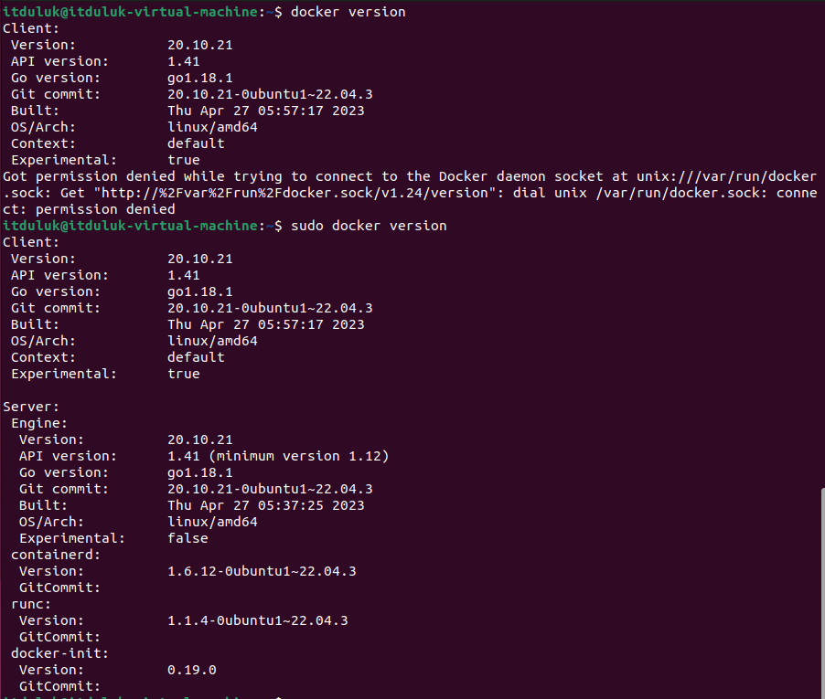

How to install Docker?
This tutorial has two parts, first the installation of Docker for Windows and then with Linux.
How to install Docker on Windows?
- Go to the Docker website to download the installer. Download Docker
It typically downloads to your Downloads folder, or you can run it from the recent downloads bar at the bottom of your web browser. - When prompted, ensure the Use WSL 2 instead of Hyper-V option on the Configuration page is selected or not depending on your choice of backend. If your system only supports one of the two options, you will not be able to select which backend to use.
- Follow the instructions on the installation wizard to authorize the installer and proceed with the install.
- When the installation is successful, click Close to complete the installation process.
- If your admin account is different to your user account, you must add the user to the docker-users group. Run Computer Management as an administrator and navigate to Local Users and Groups > Groups > docker-users. Right-click to add the user to the group. Log out and log back in for the changes to take effect.
How to install Docker on Linux?
First, let's open the termianl. Then we use this command to install Docker (by the question: Y and enter to continue):
sudo apt install docker.io
To check if the installation of Docker was successfull type docker version
Now you should see something similar to my output.
If the output works, it means that you have successfully installed Docker on Linux.

Why do I need root or sudo privileges to execute Docker commands on Linux?
The reason for this requirement is that Docker interacts directly with the underlying system and the container runtime, which involves privileged operations like creating and managing network interfaces, modifying storage, and interacting with the kernel. Running Docker commands as a regular user without sudo would result in permission errors and would not have the necessary privileges to perform these actions.
Elevate Docker Permissions Safely:
How to Add Users to the 'docker' Group
To avoid running Docker commands with sudo, you can add your user to the "docker" group.
When a user belongs to the "docker" group, they gain the necessary permissions to interact with the Docker daemon without needing sudo.
Here's how you can add your user to the "docker" group:
Check if the "docker" group exists:
grep '^docker:' /etc/group
If the "docker" group doesn't exist, create it:
sudo groupadd docker
Add your user to the "docker" group:
sudo usermod -aG docker $USER
After adding your user to the "docker" group, you'll need to log out and log back in or restart your system for the changes to take effect.
Once you've added your user to the "docker" group, you should be able to run Docker commands without sudo.
For example, you can check the Docker version using:
docker version
It's essential to be cautious when adding users to the "docker" group, as it grants them elevated privileges.
Make sure to only add trusted users to this group. If you are working in a multi-user environment or on a shared system,
consider the security implications before allowing users to access Docker without sudo.